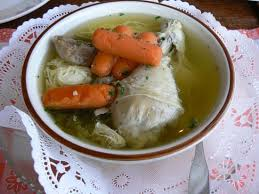

Fleisch Suppe (David.H)


Schwierigkeit:
Dauer:
Zutaten
Nudeln
- 150g Suppen Nudeln
- 2 Tl Salz
Füllung
- 1,5kg Hühnerfleisch
- Sechs Karotten
- 20 körner Pfeffer
- 3.5 Liter Wasser
- Zwei Stück Selleri
- Salz / Pfeffer
- 1 Stück Kohlrabi
- 2 Stück Pettersilie
Zubereitung:
Nudeln & Suppe
- Wasser mit Salz in einen Topf geben und erhitzen
- Die Nudeln hinzufügen und zehn Minuten Kochen lassen. Danach mit einem Sieb absieben
- Das Fleisch und Gemüse in einen seperaten Topf geben der 3,5 liter Wasser enthält und 2 Suppen Würfel
- Dies muss man dann für 2 Stunden auf niedrieger Temp. kochen lassen
- Am Ende hat man eine Gute Supee die für 2-3 Tage 3-4 Menschen ernähren kann